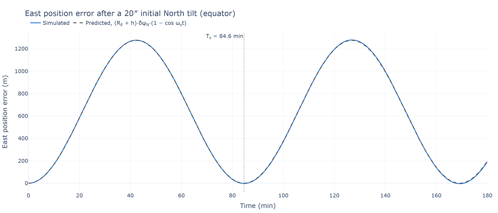
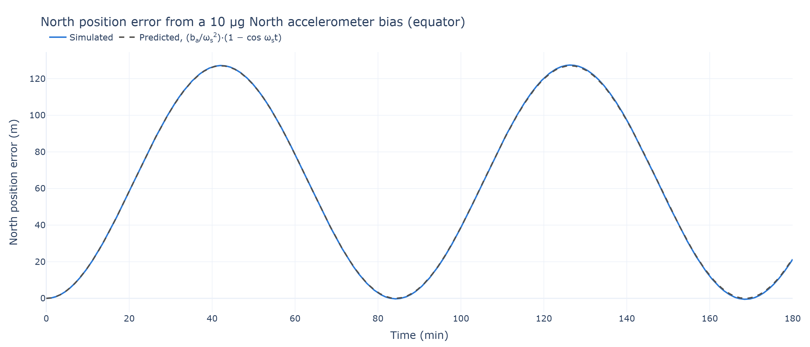
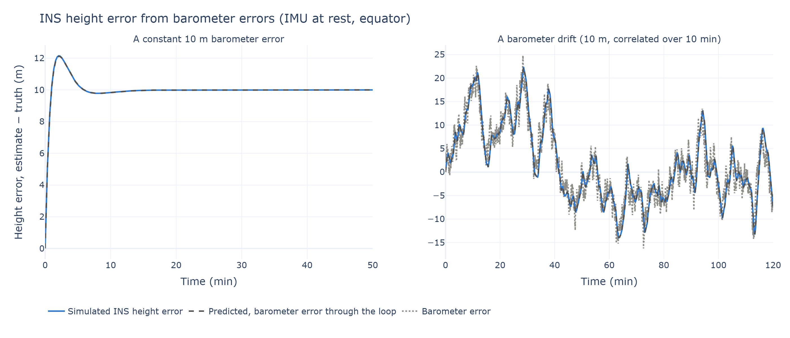
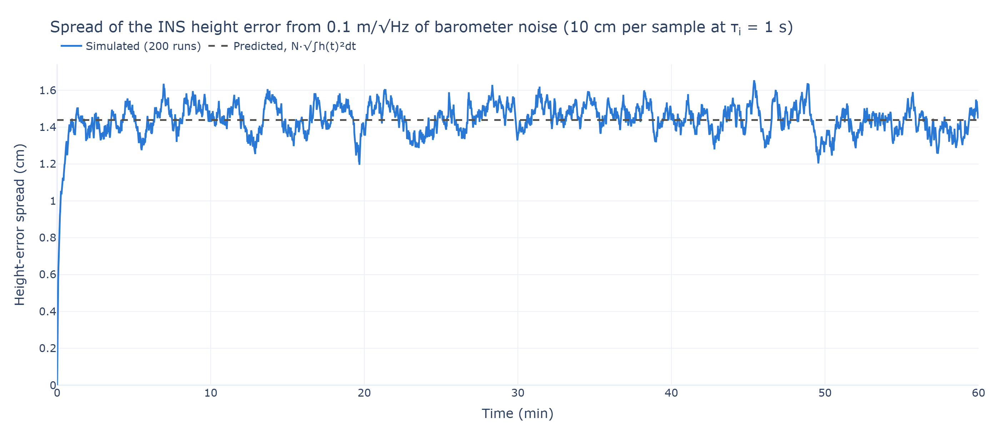
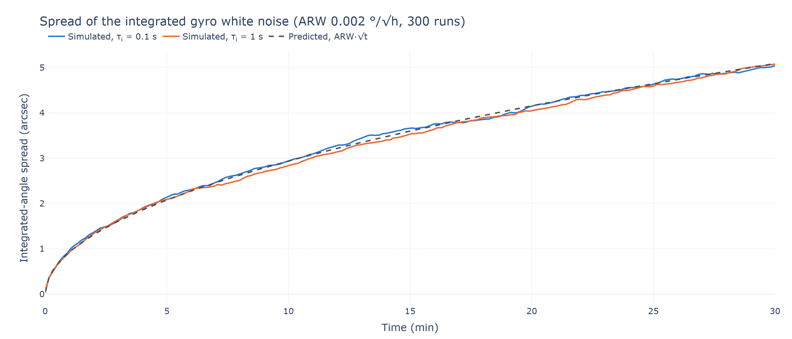
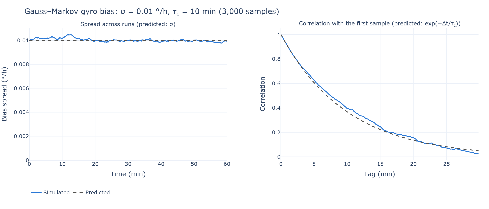

Validation¶
A simulator is only useful if it is right. This page checks ins_sim against results that can be worked out on paper: the textbook behaviour of inertial navigation errors, and the defining statistics of the sensor noise models.
Each check runs the simulator's own code (the same truth generator, IMU error model and strapdown navigator the app uses) on a scenario simple enough to have an exact answer, usually a stationary IMU with exactly one error source. The test suite asserts every agreement on each commit, and the figures and table below are regenerated from the same scenarios. The predictions are derived on the Theory pages: the INS error model, the Vertical channel and the IMU error model.
Key results
- Every inertial check agrees with its prediction to within 0.3%, and every noise check to within statistical sampling error.
- Barometer errors reach the INS height exactly as the damping loop's transfer function predicts: a bias in full, a drift with a lag, and white noise attenuated about sevenfold at a 1 s step.
- A 0.01 °/h gyro bias starts the position drifting at about 0.6 nmi/h, the classic figure for a navigation-grade INS. Over hours the Earth-rate loop bends that drift over, and the simulator reproduces the bend too.
- The bias instability in an IMU spec is the datasheet value. ins_sim models the in-run bias with a Gauss–Markov process whose spread it sets to \(B/0.617\), so the simulated bias's Allan deviation peaks at exactly \(B\) (see Allan deviation).
Summary¶
| Check | Prediction | Simulated | Difference |
|---|---|---|---|
| Zero-noise round trip, packaged mission (\(\tau_i\) = 1 s) | 0 m | \(2.3 \times 10^{-8}\) m (largest) | numerical precision |
| Schuler period, from a 20″ North tilt | 84.57 min | 84.59 min | +0.03% |
| Peak East position error from that tilt | 1,275.6 m | 1,278.8 m | +0.25% |
| Peak North error from a 10 µg accelerometer bias | 127.05 m | 127.42 m | +0.29% |
| North error after 3 h from a 0.01 °/h gyro bias | −2,808 m | −2,807 m | −0.05% |
| Free-inertial vertical time constant \(\tau_v\) | 573.0 s | 572.6 s | −0.07% |
| Largest height error with an ideal barometer | bounded | 23.3 m, then 0.001 m at 50 min | damped |
| Steady INS height error from a 10 m barometer bias | 10.00 m | 10.00 m | 0.00% |
| RMS lag of the INS height behind a barometer drift | 2.53 m | 2.56 m | +1.26% |
| INS height-error spread from 0.1 m/√Hz of barometer noise | 1.44 cm | 1.45 cm | +1.00% |
| Integrated-angle spread after 30 min, \(\tau_i\) = 0.1 s | 5.09″ | 5.04″ | −0.91% |
| Integrated-angle spread after 30 min, \(\tau_i\) = 1 s | 5.09″ | 5.08″ | −0.23% |
| Gauss–Markov bias spread at the first sample | σ | 0.997 σ | −0.34% |
| Gauss–Markov correlation at a lag of \(\tau_c\) | \(e^{-1}\) = 0.368 | 0.394 | +0.026 (standard error 0.016) |
| Allan deviation at T = 1 s | 0.1200 °/h | 0.1200 °/h | −0.03% |
| Allan deviation at the bias-instability peak (datasheet 0.01 °/h, plus white noise; T = 2.0 h) | 0.0101 °/h | 0.0102 °/h | +1.16% |
How the checks are set up¶
The inertial checks use a level IMU at rest at the equator, facing North. There the vertical component of Earth rate is zero, so the Foucault effect (Earth rate slowly swapping error between the North and East channels) vanishes, and the single-axis textbook formulas apply exactly. The truth's own perfect IMU outputs, plus the one error under test, go through the navigator:
est_C_b_n0 = Rot.from_rotvec(delta_psi_nb_n0) * truth.C_b_n[0]
start = NavState(truth.L_b[0], truth.lambda_b[0], truth.h_b[0],
truth.v_eb_n[0] + np.asarray(delta_v_eb_n0, dtype=float),
est_C_b_n0.as_quat())
nav = strapdown_navgrade(truth.omega_ib_b + np.asarray(gyro_bias_b, dtype=float),
truth.f_ib_b + np.asarray(accel_bias_b, dtype=float),
start, truth.tau_i,
meas_h_b=(truth.h_b if meas_h_b is None else meas_h_b)
if baro else None)
Errors are the estimate minus the truth, resolved along North, East and
Down at the true position: \(\delta\rvec{eb}{n}\) for position and
\(\delta\psivec{nb}{n}\) for attitude (see
Notation & conventions). The scenarios live
in tools/validation_scenarios.py; the assertions in tests/validation/.
Zero-noise round trip¶
The truth trajectory's IMU outputs are defined as the exact inverse of the navigator's update, so feeding them back through the navigator must reproduce the truth. On the packaged mission the largest difference is a few times \(10^{-8}\) m, numerical precision. This proves that the truth generator and the navigator are consistent with each other. It does not measure how accurately the navigator integrates continuous motion, because the truth is itself defined by the same discrete steps.
Schuler oscillation¶
A tilted INS misreads part of gravity as horizontal acceleration. The resulting position error moves the computed local vertical, which reduces the tilt: a pendulum with the Earth's radius as its length, the Schuler loop. An initial North tilt \(\delta\psi_N(0)\) sets the East channel oscillating:
where:
- \(\delta r_E\) is the East position error [m];
- \(R_E\) is the transverse radius of curvature and \(h_b\) the height [m];
- \(g\) is the acceleration due to gravity [m/s²];
- \(\omega_s\) is the Schuler frequency [rad/s] and \(T_s\) its period [s].

A 20″ tilt produces up to 1.3 km of position error, yet the error never grows past that: it returns to zero every 84.6 minutes.
Accelerometer bias¶
A constant accelerometer bias \(b_a\) is balanced, on average, by a tilt of \(b_a/g\). The position error oscillates about a fixed offset and does not grow:
where \(b_a\) is the North accelerometer bias [m/s²] and \(R_N\) the meridian radius of curvature [m].

Gyro bias¶
A constant gyro bias \(b_g\) is different: it keeps rotating the computed attitude, so the position error grows. At first it grows at the rate \((R_N + h_b)\,b_g\), about 0.6 nmi/h for 0.01 °/h. Over hours a second loop bends it over. The North position error is a latitude error, which misresolves Earth rate into a heading error that feeds back into the tilt. Solving the coupled tilt, heading, velocity and latitude error equations at the equator gives:
where \(b_g\) is the East-axis gyro bias [rad/s] and \(\omega_{ie}\) the Earth rotation rate [rad/s]. While \(\omega_{ie}t\) is small this reduces to the single-channel result \(-(R_N + h_b)\,b_g\,(t - \sin\omega_s t/\omega_s)\).

The Earth-rate loop is real physics
After three hours the single-channel approximation overstates the error by about 10%. The simulation follows the full prediction to within 0.1%: the simulator's rotating-Earth terms produce this coupling without being told about it.
Vertical channel¶
Gravity weakens with height, so an INS that thinks it is too low also thinks gravity is too strong, and accelerates downward: the vertical channel is unstable. With no external height reference, a Down-velocity error \(\delta v_D(0)\) grows as
where \(R_0\) is the equatorial radius [m] and \(L_b\) the latitude [rad]. The \(\omega_{ie}\) term is Coriolis coupling between the Down and East velocity errors, which slows the divergence slightly. With an ideal barometer, the third-order damping loop instead holds the error to a transient of a few tens of metres.

Barometer errors¶
The damping loop pulls the INS height onto the barometer's, errors included. Linearized, the INS height error is the barometer error \(e\) passed through the filter
derived on the Vertical channel page. The checks run each kind of barometer error on its own through the navigator and compare the height error with that filter's response:
- A constant 10 m error must end up in full in the INS height, after the filter's step response.
- A drift, here one Gauss–Markov realization with a 10 m spread and a 10-minute correlation time, must be followed with the filter's lag. The prediction passes the same realization through the filter.
- White noise of density \(N\) must leave a height-error spread of \(N\sqrt{\int_0^\infty h(t)^2\,dt}\), where \(h(t)\) is the filter's impulse response. The scenario computes the integral exactly from the filter's state-space form.
K1, K2, K3 = 3.0 / baro_tau, 3.0 / baro_tau**2, 1.0 / baro_tau**3
tau_v = vertical_time_constant(L_b)
num = [K1, K2, K3]
den = [1.0, K1, K2 - 1.0 / tau_v**2, K3]


Angle random walk¶
Gyro white noise integrates into an attitude error whose spread grows with the square root of time, at a rate set by the angle random walk (ARW) alone:
The per-sample noise is scaled by \(1/\sqrt{\tau_i}\), so the result does not depend on the sample interval \(\tau_i\). Both simulations below follow the same curve.

Gauss–Markov bias¶
The in-run bias is a first-order Gauss–Markov process with spread \(\sigma\) and correlation time \(\tau_c\). It starts in its stationary distribution, so its spread across runs is \(\sigma\) from the first sample, and its correlation with itself decays as \(e^{-\Delta t/\tau_c}\).

Allan deviation¶
The Allan deviation is how sensor datasheets characterize noise. For white noise of density \(N\) (the ARW) plus a Gauss–Markov bias it is
where \(T\) is the averaging time [s]. The Gauss–Markov term peaks at \(0.617\,\sigma\) when \(T = 1.89\,\tau_c\). ins_sim sets \(\sigma = B/0.617\) from the datasheet bias instability \(B\), so the peak lands on \(B\) itself: 0.01 °/h for the packaged spec. The simulated gyro reproduces the whole curve across five decades of \(T\).

Entering bias instability from a datasheet
Enter the bias_instab_* values exactly as the datasheet gives them:
the floor of the sensor's Allan deviation. ins_sim converts each to
the spread of its Gauss–Markov model, \(\sigma = B/0.617\), so that the
simulated Allan deviation peaks at \(B\) at an averaging time of
\(1.89\,\tau_c\). Choose bias_tau_s so that the peak falls where the
datasheet's Allan floor is: \(\tau_c \approx T_\text{floor}/1.89\).
Some datasheets quote the IEEE 952 bias-instability coefficient rather than the floor itself. The floor is 0.664 times that coefficient, so multiply by 0.664 before entering it.
Initial attitude error¶
Each Monte Carlo trial draws its alignment error from its own random
stream, and the attitude error at the first sample must equal that draw.
tests/evaluation/test_monte_carlo.py checks it to \(10^{-12}\) rad.
Rerunning the checks¶
python -m pytest tests/validation # assert every agreement
python tools/generate_doc_plots.py --validation # redraw the figures and the table
The derivations follow Groves (2013) and Titterton & Weston (2004); the Allan-variance analysis follows IEEE Std 952 and El-Sheimy et al. (2008).